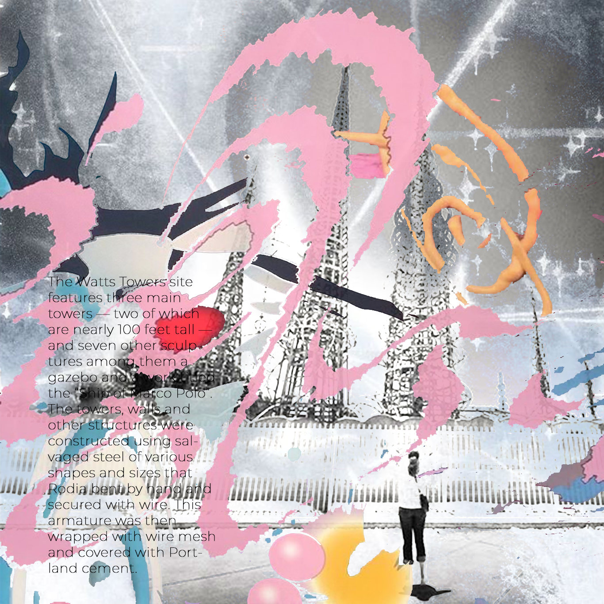

The Watts Towers, Towers of Simon Rodia, or Nuestro Pueblo ("our town" in Spanish) are a collection of 17 interconnected sculptural towers, architectural structures, and individual sculptural features and mosaics within the site of the artist's original residential property in Watts, Los Angeles, California, United States. The entire site of towers, structures, sculptures, pavement, and walls were designed and built solely by Sabato ("Simon" or "Sam") Rodia (1879 or 1886 to 1965), an Italian immigrant construction worker and tile mason, over a period of 33 years from 1921 to 1954. The tallest of the towers is 99.5 feet (30.3 m). The work is an example of outsider art (or Art Brut) and Italian-American naïve art.
The Watts Towers were designated a National Historic Landmark and a California Historical Landmark in 1990. They are also a Los Angeles Historic-Cultural Monument, and one of nine folk art sites listed in the National Register of Historic Places in Los Angeles. The Watts Towers of Simon Rodia State Historic Park encompasses the Watts Towers site.

Sabato ("Simon" or "Sam") Rodia (12 February, 1878 – July 17, 1965) was born and raised in Serino, Italy. In 1895, aged seventeen, he emigrated to the United States with his brother. Rodia lived in Pennsylvania until his brother died in a mining incident. He then moved to Seattle, Washington, where he married Lucia Ucci in 1902. They soon moved to Oakland, where Rodia's three children were born. Following his divorce around 1909, he moved to Long Beach and worked in construction and other odd jobs before finally settling in Watts in 1920. Among the projects he is known, or claimed, to have worked on are the UC Berkeley campus, the Eastern Star Home and the Bullocks Wilshire building. Rodia began constructing the Watts Towers in 1921.

One of four children, Rodia was born in 1879 into a poor peasant family in Ribottoli, Campania, a village with few resources. Rodia followed an older brother in 1894 to Philadelphia, where he began his American odyssey. Over the next fifteen years he moved from northern California to the south-western United States and back to California, where in 1917 he settled in Long Beach. In 1921 he relocated again when he bought a small house on 107th Street in the Watts section of Los Angeles, at the time a largely Mexican immigrant neighbourhood. Impetuous and difficult to get along with, he divorced his third and last wife shortly after moving to Watts. He was alone but not isolated in his community. After work each day at a Santa Monica tile factory, Rodia worked on his towers for the next thirty-four years. Then one day, in 1955, having finished the towers, he simply abandoned them. He gave the property to a neighbour and disappeared. For many years, his whereabouts were unknown. He was even presumed dead. But in the early 1960s he was discovered alive and well in Martinez, California. He had lived just long enough to be recognized and honoured for his remarkable towers.
There has been some question as to what Rodia was called during his lifetime; some sources have cited that his birth name was "Sabatino" and it is disputed as to whether he was called "Simon" during his lifetime. It is widely known and accepted that he was referred to as "Sam" by close friends. He appears as Samuel Rodia (and still living in Oakland) in the 1910 U.S. Census, but by the time of the 1920 U.S. Census, he had already become Sam Rodia. His surname has also been misspelled as "Rodella" or "Rodilla".
The sculptures' armatures are constructed from steel rebar and Rodia's own concoction of a type of concrete, wrapped with wire mesh. The main supports are embedded with pieces of porcelain, tile, and glass. They are decorated with found objects, including bottles, ceramic tiles, seashells, figurines, mirrors, and other items. Rodia called the Towers "Nuestro Pueblo" ("our town" in Spanish). He built them with no special equipment or predetermined design, working alone with hand tools. Neighborhood children brought pieces of broken pottery to Rodia, and he also used damaged pieces from Malibu Potteries and CALCO (California Clay Products Company). Green glass includes recognizable soft drink bottles from the 1930s through the 1950s, some still bearing the former logos of 7 Up, Squirt, Bubble Up, and Canada Dry; blue glass appears to be from milk of magnesia bottles. Their structural design and placement near the builder's home are strongly reminiscent of the gigli ("lillies") towers which feature in an annual festival to St. Paulinus in Nola, Italy, with which he was probably familiar.
Rodia bent much of the Towers' framework from scrap rebar, using nearby railroad tracks as a makeshift vise. Other items came from alongside the Pacific Electric Railway right-of-way between Watts and Wilmington. Rodia often walked the right-of-way all the way to Wilmington in search of material, a distance of nearly 20 miles (32 km).
In the summer of 1954, Rodia suffered a mild stroke. Shortly after the stroke, he fell off a tower from a low height. In 1955, Rodia gave his property to a neighbor and left, reportedly tired of battling with the City of Los Angeles for permits, and because he understood the possible consequences of his aging and being alone. He also mentioned that the towers were frequently vandalized by neighbors. He moved to Martinez, California, to be with his sister. He remained there for the next eleven years until his death in 1965.

Rodia's bungalow inside the enclosure burned down as a result of an accident on the Fourth of July 1956,[24] and the City of Los Angeles condemned the structure and ordered it all to be destroyed. Actor Nicholas King and film editor William Cartwright visited the site in 1959, and purchased the property from Rodia's neighbor for $2,000 in order to preserve it. The city's decision to pursue expediting the demolition was still in force. The towers had already become famous and there was opposition from around the world. King, Cartwright, architects, artists, enthusiasts, academics, and community activists formed the Committee for Simon Rodia's Towers in Watts. The committee negotiated with the city to allow for an engineering test to establish the safety of the structures and avoid their demolition.[19] Tests conducted October 10, 1959, found that the towers were capable of withstanding lateral forces of up to 10,000 pounds.[25]
The Committee for Simon Rodia's Towers preserved the site independently until 1975 when, for the purpose of guardianship, they partnered with the City of Los Angeles and then with the State of California in 1978. The Towers are operated by the City of Los Angeles Cultural Affairs Department and curated by the Watts Towers Arts Center/Charles Mingus Youth Arts Center, which grew out of the Youth Arts Classes originally established in the house structure.
In February 2011, the Los Angeles County Museum of Art received a grant from the James Irvine Foundation to scientifically assess and report on the condition of the Watts Towers, to continue to preserve the undisturbed structural integrity and composition of the aging works of art.[26] Weather and moisture caused pieces of tile and glass to become loose on the towers, which are conserved for reattachment in the ongoing restoration work. The structures suffered little from the 1994 Northridge earthquake in the region, with only a few pieces shaken loose. An extensive restoration project by the Los Angeles County Museum of Art began in 2017.[27] The site re-opened in November 2022 when the work was finished.[28]
California Historic Landmark marker [NO. 993] WATTS TOWERS OF SIMON RODIA – The Watts Towers are perhaps the nation's best known work of folk art sculpture. Using simple hand tools, cast off materials (glass, shell, pottery pieces and broken tile) Italian immigrant Simon Rodia spent 30 years building a tribute to his adopted country and a monument to the spirit of individuals who make their dreams tangible. Rodia's Towers inspired many to rally and preserve his work and protect it for the future.